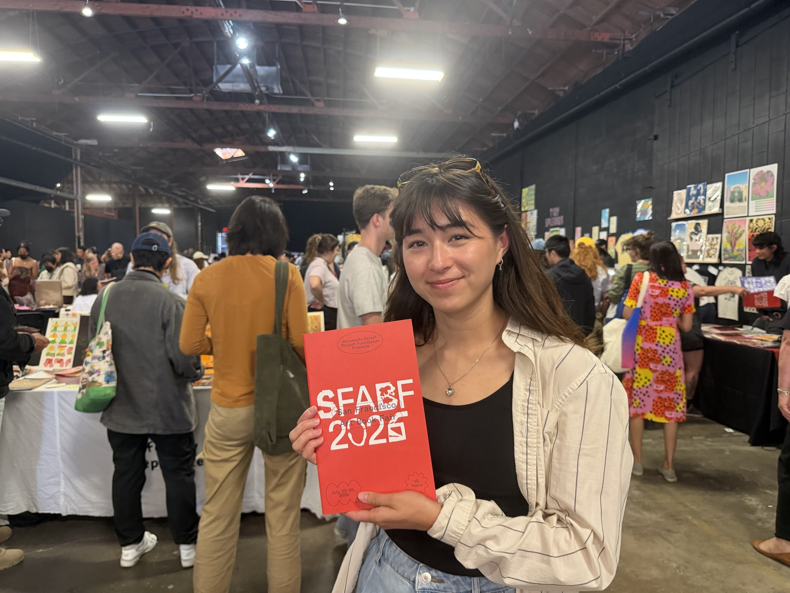

Agentic Design Systems at Zoox
I built a custom MCP server and code harness for Zoox's design system that supports over 10 internal tools, allowing designers to update the design system with minimal engineering support and reduce AI hallucinations.

Hi, I'm Ajia. I’m a product designer, researcher, web developer, and illustrator based in the SF Bay Area. My work focuses on how design systems can inspire collaboration and creativity. I'm also working on my MDes thesis at UC Berkeley, studying digital creativity support tools.
I built a custom MCP server and code harness for Zoox's design system that supports over 10 internal tools, allowing designers to update the design system with minimal engineering support and reduce AI hallucinations.
In collaboration with Common Sense Media, my friends and I made a mobile game to teach 8-12yr olds about the joy of making. Players run a workshop that solves problems, fixes heirlooms and important items, and upgrades homes of whimsical characters, slowly building up their physical craft and critical thinking skills.
For "Technology Design Foundations", I constructed a music making artifact that blends traditional MIDI controls with collected natural objects (e.g. leaves, sticks, etc) to create music, powered by computer vision algorithms and Arduino.